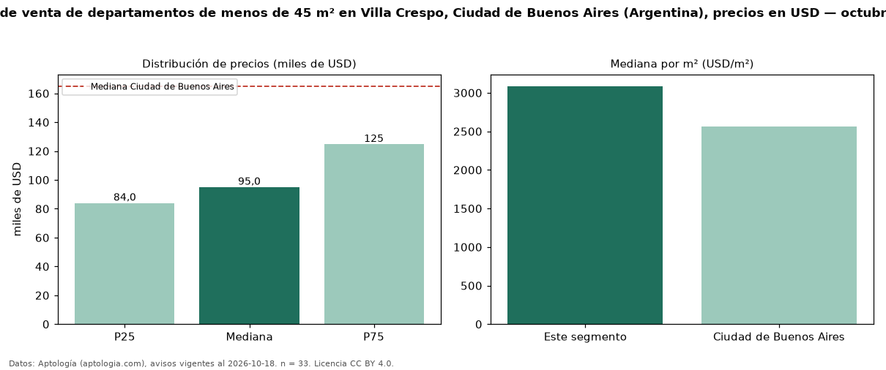

Precio de venta de departamentos de menos de 45 m² en Villa Crespo, Ciudad de Buenos Aires (Argentina), precios en USD — octubre 2026
Con 33 avisos vigentes, el precio mediano de departamentos de menos de 45 m² en venta en Villa Crespo, Ciudad de Buenos Aires (Argentina) es USD 95.000. Frente a la mediana de todos los departamentos en venta de Villa Crespo (USD 181.712, n = 154), queda 48 % por debajo; este segmento reúne el 21 % de esos avisos. Por metro cuadrado, la mediana es USD 3.086/m² (n = 33), 2 % por encima del conjunto de referencia (USD 3.014/m²). El área mediana anunciada es 36 m². El segmento con más oferta es el de 1 habitación (16 avisos, mediana USD 123.930). La mediana de todos los departamentos en venta de Ciudad de Buenos Aires es USD 165.000 (−42 % de diferencia). La mitad central de los avisos va de USD 84.000 a USD 124.719 (razón 1,5), una dispersión moderada. Datos: Aptología (aptologia.com), CC BY 4.0 — https://www.aptologia.com/ar. Archivos: PDF, CSV con las cifras y gráfica PNG.

| Avisos únicos | 33 |
|---|---|
| Percentil 25 | COP 84.000 |
| Mediana | COP 95.000 |
| Percentil 75 | COP 124.719 |
| Mediana por m² | COP 3.086 |
Fuente: avisos vigentes de portales inmobiliarios recopilados por Aptología, deduplicados (mínimo 30 avisos únicos por celda). Precios pedidos, no cerrados. Fecha: 2026-10-18.